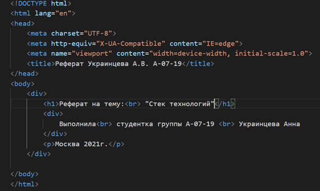
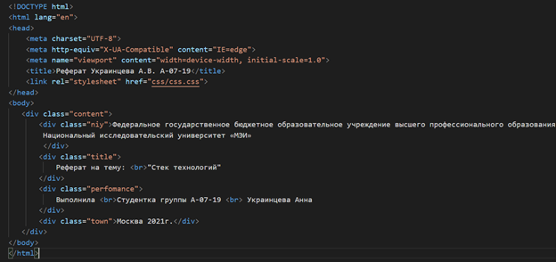
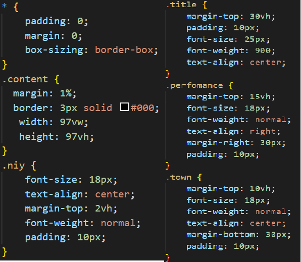
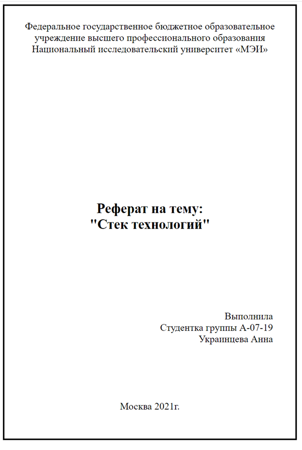
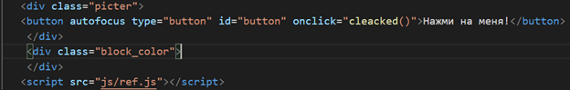
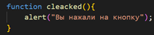
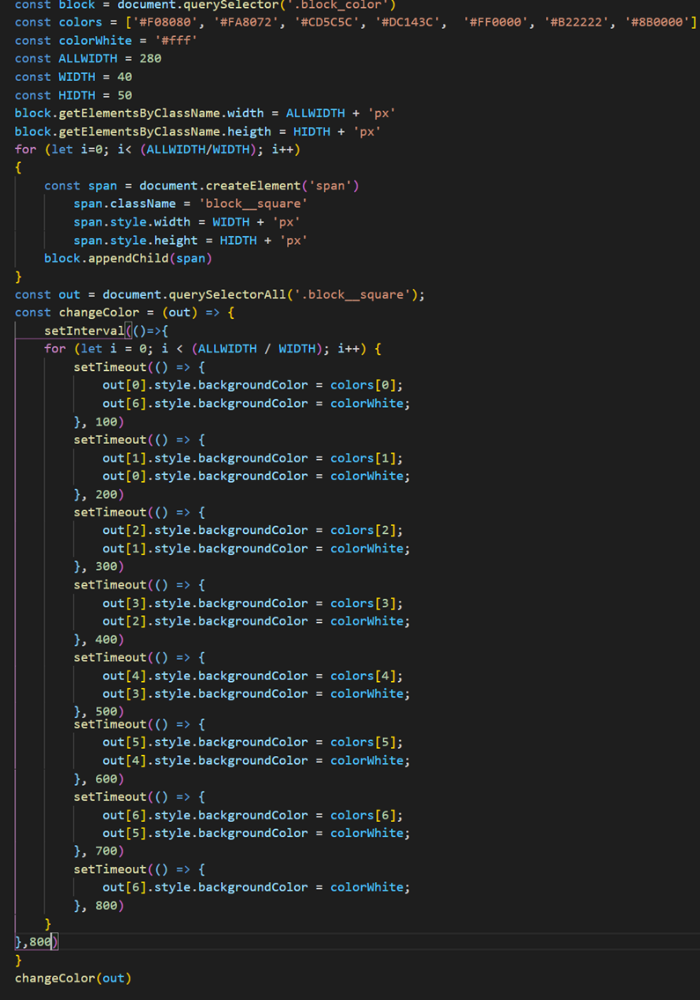
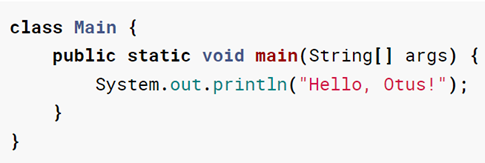
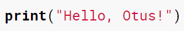

Федеральное государственное бюджетное образовательное учреждение высшего профессионального образования
Национальный исследовательский университет «МЭИ»
Реферат на тему: "Стек технологий"
Выполнила Студентка группы А-07-19 Украинцева Анна
На данный момент компьютерные технологии все больше развиваются и становятся неотъемлемой частью жизни человека, они затронули
абсолютно все сферы деятельности человека, такие как:
Образование
Культура
Медицина
Искусство
Быт
На данный момент каждый человек хоть раз посещал веб-сайт,
все они «лежат» на сервере, который прослушивает запросы от клиента. Все web-сайты основываются
на наборе технологий, который называют стек технологий.
Для написания ПО разработчик должен не только написать код,
чтобы он работал, но и позаботиться о безопасности, оптимизации и масштабируемости. Для того, чтобы качественно разработать проект необходимо проанализировать задачи, которые он
должен выполнять и подобрать нужные инструменты для реализации.
Что такое стек технологий.
Стек технологий (от англ. stack — «стопка») —
это набор инструментов, на основе которых разрабатывается
сайт или приложение. Иными словами – это набор инструментов,
который применяется при работе в проектах и включается в себя:
Языки программирования
Фреймворки
Компиляторы
Системы управления базами данных и т.д.
Как было сказано выше, для того чтобы разработать стек
технологий необходимо в первую очередь проанализировать проект.
Перечислим важные критерии при выборе технологий:
Сложность проекта
По своей структуре бывают:
Простые – простые интернет сайты, визитки,
простые приложения, которые делаются на основе шаблонов, CMS.
Средние – сложные интернет магазины, продвинутые приложения.
Сложные проекты – порталы, социальные сети
Тип и размер проекта
Скорость разработки
От скорости разработки будет зависеть
использование шаблонов, фреймворков, CMS и т.д.
Доступные инструменты разработки
Наличие готового решения
Тренд его развития
Наличие документации
Возможность интеграции с другими решениями
Требования к безопасности
Требования к нагрузкам
Кроссплатформенность – возможность web-сайта работать с несколькими операционными системами,
например, Windows, Linux, Mac, а также на мобильных системах.
Кроссбраузерность - возможность web-сайта отображаться и функционировать одинаково во всех браузерах,
например, Яндекс, Google, Firefox, Opera, Internet Explorer.
Выбирая по таким критериям,
можно наиболее эффективно подобрать стек технологий.
Разделяют разные стеки технологий:
LAMP:
Linux
Apache
MySQL
PHP
LEMP
Linux
Nginx
MySQL
PHP
WAMP
Windows
Apache
MySQL
PHP
WEMP
Windows
Nginx
MySQL
PHP
MAMP
Mac OS X
Apache
MySQL
PHP
Где
1 – это операционная система
2 – веб-сервер
3 - СУБД
4- язык программирования, используемый для создания веб-приложения.
Можно сказать, что все веб-сайты работают на серверах,
у которых ОП (операционная система) – Linux. Это обусловлено тем,
что это ОП надежнее, быстрее и она бесплатная.
Поэтому будем смотреть только стеки технологий LAMP или LEMP.
Если рассматривать веб-сервер, то можно сказать,
что Apache появилось раньше, а Nginx появился позже,
он также является более современным и работает в несколько раз
быстрее, поэтому большинство разработчиков выбирают именно
сервер Nginx. Но так как это нужно подбирать индивидуально
к каждому проекту,
то сказать точно, какой веб-сервер использовать лучше нельзя.
Это уже созданные стеки технологий, но это не означает,
что каждый разработчик должен использовать только их,
есть множество других СУБД и языком программирования,
которые можно использовать в проекте и которые будут описаны ниже.
Данные части приложения отличаются функциональностью,
из-за этого к каждой из них требуются различные языки программирования, фреймворки и ПО, при помощи которых будет вестись разработка. Следовательно, можно сказать, что требования к функциональности
клиентской и серверной частей влияют на стек технологий.
Разберем каждую из частей web-приложения отдельно
Клиентская сторона
Это видимая для пользователя часть приложения, с которой он может взаимодействовать. Можно выделить три основных элемента
разработки клиентской части для любого web-приложения:
HTML – это язык разметки, который применяется
для правильного отображения web-приложения в браузерах.
CSS - формальный язык для описания внешнего вида документа,
который пишется с использованием языка разметки.
JavaScript – язык программирования,
отвечающий за интерактивную часть web-приложения.
Для создания клиентской стороны приложения также существуют фреймворки,
например, Vue.js, Angular, React.js.
Серверная сторона
Это скрытая от глаз пользователя часть web-приложения, которая отвечает за внутренний функционал.
Для разработки этой части приложения используются:
Базы данных
Фреймворки для бэкэнд
Язык бэкэнд-программирования
Сервер
Клиентская часть
Для написания правильного и безопасного приложения необходимо правильно подобрать технологический стек. Разберем подробно языки разметки,
языки программирования, фреймворки, шаблоны и т.д.
HTML
Как было сказано ранее это язык разметки, который должен знать каждый веб-разработчик. Этот язык состоит из тегов, он преобразует команды(теги) в визуальное отображение и выводит в тот или иной браузер.
Рассмотрим пример работы данного языка

На рисинку показано визуальное представление языка HTML, при помощи тех или иных тегов можно создать визуальное представление web-приложение, которое сможет видеть пользователь.
На рисунке ниже показано, как данный код будет представлен
в Браузере.
CSS
Можно заметить, что пользователь видит информацию, которая находится на странице, но для правильного вывода информации нужно правильно размещать ее, то есть необходим язык, который смог бы описать внешний вид приложения. Для этого необходим язык CSS.
Рассмотрим примеры, которые представленые ниже

Как можно заметить, для работы с языком CSS видоизменяется и документ HTML, в первую очередь подключается сама каскадная таблица стилей при помощи тега "",
а также добавляются классы или идентификаторы,
не будем углубляться в значение тегов, на рисунке выше показан лишь пример для визуального представления.
При данном формате страницы HTML рассмотрим страницу CSS, которая представлена на рисунке ниже

На следующем риснке можно увидеть представление примера,
приведенного выше, в Браузере. Именно это и будет видеть
пользователь.

JavaScript
Во многих web-приложениях часто используются функции, анимации и т.д. для этого применяется такой язык кодирования, как JavaScript.
Рассмотрим более подробно функционал данного языка:
Математические операции
Обработка и валидация файлов в HTML-формат
Взаимодействие с пользователем и событиями
Взаимодействие с HTML-элементами на странице и управление их содержимым и стилями
Добавление анимации и различных графических эффектов на веб-сайт
И прочее
Рассмотрим примеры использования данного языка разработки.

В данном случае имеем кнопку с текстом «Нажми меня» и функционалом,
описанном в JS файле:

Также, кроме кнопки может присутствовать и анимация:

Языки разработки, которые приведены выше, являются обязательными
при создании любого веб приложения.
JS фреймворки
Кроме этого, существует множество фреймворков для работы с клиентской стороной веб-приложения, рассмотрим некоторые из них и распределим,
какие фреймворки подходят для разных типов приложений.
Как мы уже говори, проекты можно разделить на простые, средние и сложные.
Теперь рассмотрим это с более научной стороны.
Существует 3 вида веб-сайтов, которые определяют подход к работе:
SPA (Single Page application) – это простые по сложности, одностраничные web-приложения, которые загружаются на одну HTML страницу. В данном случае, пользователь видит весь основной контент на странице браузера, а когда прокручивает страницу или переходит на другую,
то необходимые элементы подгружаются.
MPA (Multi Page Application) – это средние по сложности веб-приложения, в которой при изменении
данных или загрузке новой информации страница обновляется.
PWA (Progressive Web App) – это самые сложные веб-приложения, которые можно назвать гибридом мобильного приложения и сайта. Данные приложения могут, например,
отправлять уведомления или работать в офлайн режиме.
От вида приложения будет зависеть, какие фреймворки лучше всего использовать.
Angular
Данный фреймворк известен тем, что представляет разработчикам наилучшие условия для объединения HTML, CSS и JavaScript. Angular больше всего нацелен на приложения вида SPA, но крупные проекты также пишутся на нем,
примеры таких приложений:
Google
YouTube
Рассмотрим плюсы и минусы
Плюсы:
Большая скорость разработки
Двустороннее связывание данных
Модули
Кроссбраузерность
Кроссплатформенность
Минусы:
Документация по фреймворку довольно посредственная,
то есть ее качество оставляет желать лучшего
Довольно большой объем результирующего кода
Сам по себе фреймворк сложный
React
При помощи данной библиотеки разработчик может получить страницу, которая отображается без перегрузки страницы, из-за этого веб-приложение быстро
реагирует на изменения, внесенные пользователем.
Отличительной особенность данного фреймворка считается то, что он универсален, то есть его можно использовать,
как на сервере, так и на мобильных платформах.
Плюсы:
Кроссбраузерность
Кроссплатформенность
Хорошая производительность
Модули (но они разработаны хуже, чем в Angular)
Минусы:
Управление памятью на низком уровне
Проблемы с безопасностью
Vue
Данная библиотека подходит как для небольших проектов, которым нужно добавить немного реактивности, так и для крупных одностраничных приложений. Также Vue легко масштабируется и хорошо подходит для объемных проектов,
из-за этого его называют прогрессивным фреймворком.
Этот фреймворк относительно новый, поэтому он и менее популярный, но он совсем не уступает своим «коллегам». Минусом можно назвать не такое большое количество информации, которое можно найти в интернете, написанное другими пользователями, которые уже работают на данном фреймворке,
это связано с описанной выше новизной проекта.
Рассмотрим отрицательные и положительные стороны данного фреймворка
Плюсы:
Проста и функциональна
Фреймворк весит немного, что сокращает использование памяти и улучшает производительность
Высокая скорость разработки
Кроссбраузерность
Кроссплатформенность
Минусы:
Иногда можно создать ситуацию, в которой будет неочевидность работы компонентов
По сравнению с React данный фреймворк очень не гибкий, то есть еще сложнее создать уникальное приложение, или усовершенствовать уже имеющиеся данные
Bootstrap
Данный фреймворк считается самым популярным среди фреймворков, которые отвечают за внешний вид, который открывается для пользователя,
то есть отвечает за фронтенд часть проекта.
Рассмотрим положительные и отрицательные стороны данного фреймворка
Плюсы:
Высокая скорость
Кроссбраузерность
Кроссплатформенность
Однородность дизайна и его согласованность
Минусы:
Конечные файлы CSS и JS имеют достаточно большой вес
Малая гибкость, то есть создать уникальный проект почти невозможно
Серверная часть
СУБД
СУБД (Система управления базами данными) —
это программное обеспечение для работы с базами данных (БД).
БД – это хранилище данных о некоторой переменной области,
организованное в виде специальной структуры
MySQL
MySQL обеспечивает реализацию БД SQL, которая хорошо подходит
для небольших и средних веб-страниц.
У данной программы есть преимущество, а точнее, так как она бесплатна, то доступна в пакетах общедоступного хостинга и легко настраивается на Linux. В тот же момент у MySQL есть проблемы,
связанные со стабильностью и кластеризацией.
MariaDB
Это ответвление СУБД MySQL. MariaDB полностью совместима с приложениями, которые используют MySQL, а данный переход на другую СУБД связан с тем, что MySQL
развивается уже не так активно.
MongoDB
Это документоориентированная система управления БД с открытым исходным кодом. Данная СУБД отличается высоким уровнем безопасности, масштабируемостью и доступностью. Особенностью этой базы данных является то, что она не требует описания схемы таблицы, как в реляционных БД, в ней данные хранятся в виде документов и коллекция.
Также в ней нет сложных соединений.
Это три наиболее часто используемые СУБД. И если сравнивать именно их, то можно сказать, что MongoDB чаще обновляется и соответственно является более современной, также в нее добавлены оптимизации, которые повышают производительность по сравнению с оригиналом. MongoDB – продукт, который можно использовать как для повышения производительности так и
для внедрения новых возможностей обработки и хранения данных.
Языки программирования, используемые для создания веб-приложения
Данные языки программирования нужны для того, чтобы решать задачи, с которыми не справится просто HTML страница. Так как веб-страница, написанная на языке HTML – статична, то при работе с ней не будет появляться новой информации, что отрицательно влияет на качество сайта, потому что пользователь не сможет с ней взаимодействовать и, например, не сможет найти необходимую ему информацию. Приведем пример, каждый из нас хоть раз где-то регистрировался, перед нами высвечивалось окошко, где мы должны вбить пароль и логин и далее данные,
которые мы вписали летят на сервер и там проверяются.
Рассмотрим несколько примеров таких языков программирования.
PHP
PHP – это язык сценариев общего назначения, который подходит для веб-разработки. Основная задача данного серверного языка программирования – это «оживление» HTML страницы, он обеспечивает эффективную связь между веб-ресурсом,
сервером и базами данных.
Разберем плюсы и минусы данного языка
Плюсы:
Простота в изучении
Высокая производительность
Мощный и гибкий, то есть данный язык вполне может обеспечить, как небольшой личный блог,
так и большой проект, по типу интернет магазина или соцсети
Бесплатный
Не требователен к серверам,
то есть данный язык можно применять на всех видах серверов
Простота редактирования
Минусы:
Низкая защищенность, то есть у проекта, написанном на данном языке защищенность меньше,
чем с использованием других языков программирования
Многие вещи, написанные на данном языке могут
быть истолкованы несколькими способами
Маленькая скорость отладки
Объекты передаются по значению, а не по ссылке, как привыкли многие разработчики,
а также что уменьшает расход памяти.
Ruby
Ruby – динамический язык программирования, который является достаточно простым и продуктивным.
Данный язык характеризуется автоматическим управлением памяти.
Малое количество информационных ресурсов
по изучению данного языка разработки
Мало производителен и медлителен
Данный язык медленно разрабатывается и
соответственно редко обновляется
Python
Данный язык можно назвать высокоуровневым скриптовым языком программирования. Его главный плюс – это универсальность, поэтому Python подходит для решения самых разных задач. На сегодняшний день этот язык разработки применяется в различных сферах, например, парсинг, разработка приложений,
веб-сайтов и многое другое.
Рассмотрим плюсы и минусы данного языка программирования
Плюсы:
Довольно компактный язык программирования, то есть код, написанный на нем будет выглядеть не так объемно, как по сравнению, например, с Java,
а это в свою очередь упрощает читаемость кода.
Рассмотрим пример.
Вывод текста "Hello, Otus!", написанный на языке Java:

Вывод текста "Hello, Otus!", написанный на языке Python

Как можно заметить, то код, написанный на языке Python, занимает намного меньше места за счет того, что этот язык не компилируется, поэтому код становится
в десятки раз проще и удобнее для чтения.
Довольно простой языка
Как было сказано выше: Python – это универсальный язык
Востребованный на рынке
Асинхронное программирование, когда разные части программы могут работать отдельно друг от друга
Минусы:
Скорость, программы, написанные на этом языке,
работают медленнее, чем на компилируемых языках.
Не удобен при написании мобильных приложений
Из-за гибкости типов данных потребление памяти Python не минимальное
По статистике язык Python на сегодняшний день считается самым часто используемым,
примерно 30 % разработчиков работают именно на нем.
Бэкенд фреймворки
Кроме фреймворков, которые отвечают за внешнюю часть проекта, также существуют те, которые отвечают за ее «органы», то есть за бэкенд часть. Существует большое количество таких фреймворков,
рассмотрим некоторые из них.
Django
Один из самых популярных фреймворков, написанный на языке Python.
Разберем сильные и слабые стороны данного фреймворка
Плюсы:
Быстрый и не перегруженный ненужными данными и возможностями.
Безопасный.
Компактный код
Кросс-платформенный проект, значит может работать на разных ОП
Масштабируемость
Минусы:
Так как уже существуют готовые библиотеки, то,
следовательно, гибкость проекта будет уменьшаться.
Медленное развитие фреймворка.
Сложный
Laravel
Это PHP фреймворк, который на данный момент является одним из самых популярных среди PHP движков. Создан этот код на PHP, и создать проект на основе этого фреймворка можно тоже только на PHP,
это качество можно отнести к минусам.
Разберем положительные и отрицательные черты фреймворка
Плюсы:
Простой синтаксис
Удобный механизм обработки ошибок и исключений
Большое количество понятной документации
Минусы:
Нарушенная обратная совместимость между
разными версиями фреймворка
Нелогичное расположение каталогов и файлов.
Express
Представляет собой платформу Node.js. Данный фреймворк используется для создания
API-интерфейсов и веб-приложений.
Рассматриваемый фреймворк написан на языке JavaScript, он считается достаточно популярным. Иногда Express называют фреймворком для других фреймворков, потому что многие другие
фреймворки построены благодаря Express.
Плюсы:
Простой
Гибкий
Быстрый
Небольшой объем базового функционала
Широкий выбор подключаемых модулей
Минусы:
Большой объем ручной работы
Качественно разработать большой проект очень сложно,
что связано с использование языка JavaScript
Существует еще множество других фреймворков, мы рассмотрели лишь самые известные. В настоящее время большая часть разработчиков отдает сое предпочтение фреймворку Django, так как он очень прогрессивен, часто обновляем и написан на языке Python, который на данный момент также является самым используемым языком у разработчиков, в первую очередь,
потому что он универсален, прост в прочтении.
Выводы
Из всего вышесказанного можно сделать следующий вывод:
Для каждого проекта должен подбираться свой стек технологий.
Разработчик должен правильно выявить
Цели проекта
Что ему необходимо сделать, чтобы добиться результата
Конечный результат
Сложность проекта
Уровень безопасности
И прочее
Все это необходимо для того, чтобы подобрать все программы для стека правильно,
и чтобы они правильно использовались в проекте.
Поэтому можно сделать вывод, что однозначно сказать, что лучше использовать, а что хуже нельзя,
так как все индивидуально.
Выше изложены плюсы и минусы многих программ, именно по ним можно определить то,
что подходит именно для вашего приложения.